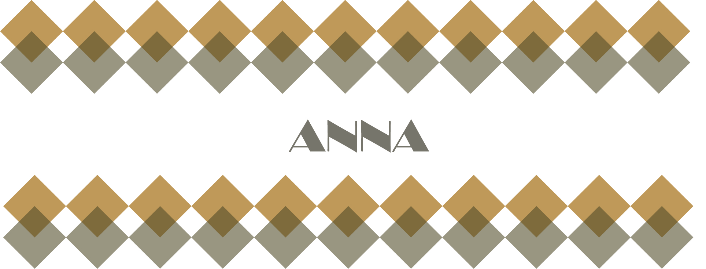
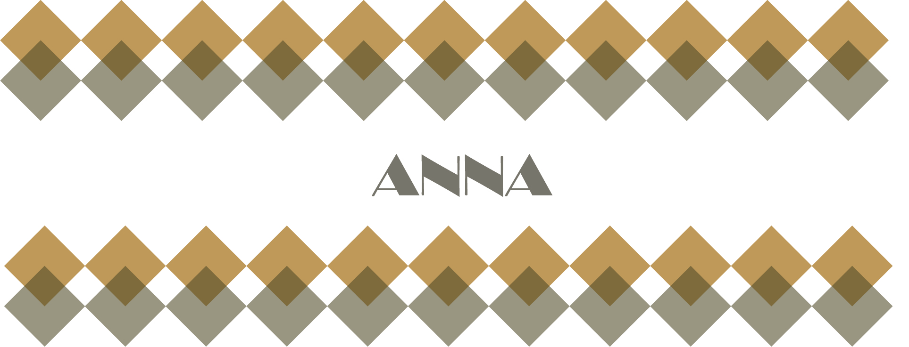

作品四 甜點貓貓
作品類型 電繪 某一堂課的產物，有時候會覺得好像在上課時間會比較有靈感，但另人矛盾的是我不太喜歡繪畫的被打擾，所以蠻多時間是晚上會處理一些需要靈感的事情，這幅畫也是吧，有時候畫到很可愛的東西，在心裡也會感到開心，這也須就是繪畫的力量吧，但晚上畫畫的時候不建議畫食物，因為會很餓。

作品類型 電繪 某一堂課的產物，有時候會覺得好像在上課時間會比較有靈感，但另人矛盾的是我不太喜歡繪畫的被打擾，所以蠻多時間是晚上會處理一些需要靈感的事情，這幅畫也是吧，有時候畫到很可愛的東西，在心裡也會感到開心，這也須就是繪畫的力量吧，但晚上畫畫的時候不建議畫食物，因為會很餓。